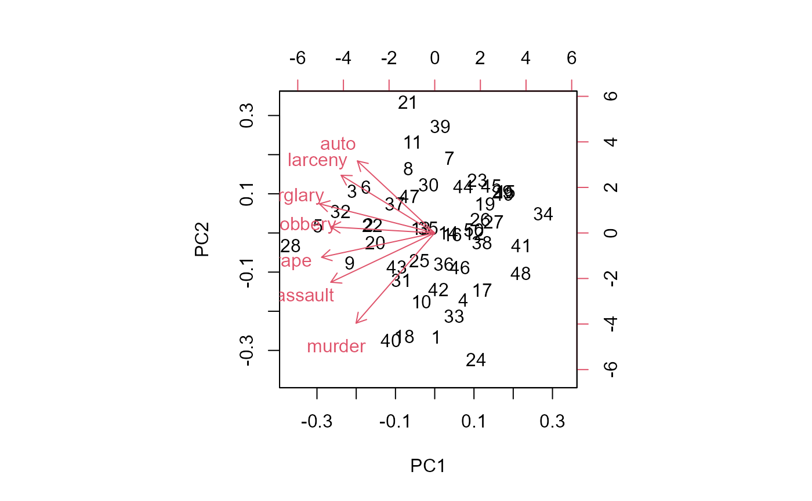
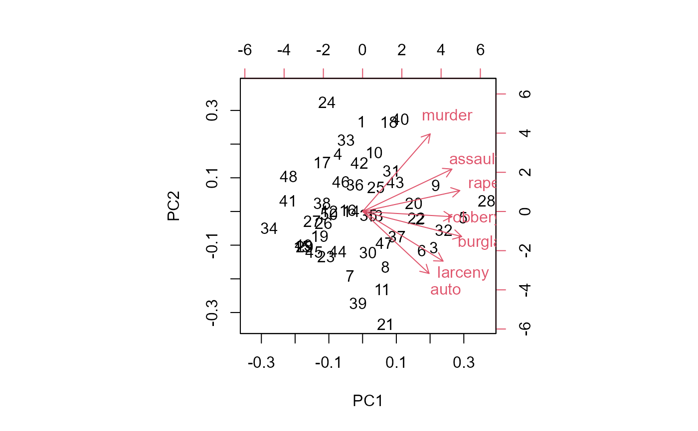

Principle component-like objects have variable loadings (the eigenvectors of the covariance/correlation matrix) whose signs are arbitrary, in the sense that a given column can be reflected (multiplied by -1) without changing the fit.
Value
The pca-like object with specified columns of the variable loadings and observation scores multiplied by -1.
Details
This function allows one to reflect any columns of the variable loadings (and corresponding observation scores). Coordinates for quantitative supplementary variables are also reflected if present. This is often useful for interpreting a biplot, for example when a component (often the first) has all negative signs.
Examples
data(crime)
crime.pca <-
crime |>
dplyr::select(where(is.numeric)) |>
prcomp(scale. = TRUE)
biplot(crime.pca)

crime.pca <- reflect(crime.pca) # reflect columns 1:2
biplot(crime.pca)

iris.lda <- MASS::lda(Species ~ ., data=iris)
#reflect the first dimension
iris.lda1 <- reflect(iris.lda, columns = 1)
# compare predicted scores
predict(iris.lda)$x |> head()
#> LD1 LD2
#> 1 8.061800 -0.3004206
#> 2 7.128688 0.7866604
#> 3 7.489828 0.2653845
#> 4 6.813201 0.6706311
#> 5 8.132309 -0.5144625
#> 6 7.701947 -1.4617210
predict(iris.lda1)$x |> head()
#> LD1 LD2
#> 1 -8.061800 -0.3004206
#> 2 -7.128688 0.7866604
#> 3 -7.489828 0.2653845
#> 4 -6.813201 0.6706311
#> 5 -8.132309 -0.5144625
#> 6 -7.701947 -1.4617210